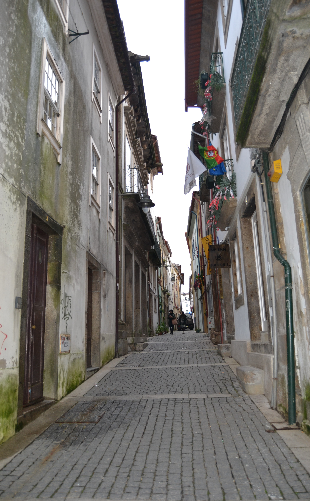

16 Rua de D. Gualdim
Longa e curiosíssima rua que no Mappa se estende da praça do Pão até ao Terreiro de Sto. António .
Aberta sobre uma rua do reticulado da cidade romana é hoje uma das raras artérias medievais que não sofreu o alargamento feito nos finais do séc. XIX a quase todas as ruas do bairro das Travessas .
Em data que desconhecemos, foi dividida em duas: rua de D. Gualdim , da Sé até à rua D. Afonso Henriques , e rua de S. Tiago , daí até à rua de S. Paulo .
Não sabemos hoje qual a casa onde viveu D. Gualdim Pais , célebre guerreiro do nosso primeiro rei, e que apenas a tradição diz aqui ter habitado; ou onde se situou a casa cedida pelo arcebispo D. Paio Mendes aos Templários para hospício dos peregrinos. Sabemos sim que esta rua aparece no mais antigo livro de Nota do Arquivo da Câmara Municipal de Braga , onde a 12 de Fevereiro de 1445 Vasco Jorge , escrivão da Câmara , lançou o primeiro prazo dos seus bens, com o nome de Cruz da Picota. Em 1459 vem já noutro prazo como rua de D. Gualdím .
Por essa data já as duas partes da rua se deviam assumir e ter populações bem diferentes: as da metade Norte, mais rica, próximas da Sé e praça do Pão , centro fundamental da cidade medieval e onde um século mais tarde seria construído, por mando de D. Diogo de Sousa , o novo edifício da Câmara . E a parte Sul junto à porta de S. Tiago , com a sua igreja própria ( a Igreja de Santiago , hoje Igreja da Cividade ) então virada para esta rua.
Em 1750 muita da sua importância foi alterada: o arcebispo D. José de Bragança já mandara fazer a ala barroca do seu palácio e na sua ideia já gravitava a vontade de mudar o edifício da Câmara para mais perto de si, o que fez em 1754 . O comércio há muito que saíra da rua dos Burgueses para a do Souto ; e, também, já desde D. Diogo de Sousa que os mercados se tinham implantado, com recintos próprios, noutros locais, um deles, até relativamente próximo. E a Igreja de Santiago , viria a ser reconstruída, mas com a planta invertida, isto é, com a fachada virada para a rua D. Gonçalo Pereira , 37 anos após.
Como dissemos, hoje a rua de D. Gualdim , isto é, a parte Norte, conserva muitíssimo bem o aspecto que mostra no Mappa. Pena só que as curiosas casas sobradadas do prazo n.º 1, a casa do prazo n.º 18 e o edifício da Câmara tenham sido perdidas na voragem dos séculos.
A metade Sul, essa, mercê do alargamento que recebeu nos inícios do nosso século, transformou-se totalmente, sendo hoje uma das ruas mais incaracterísticas de Braga .
Das 20 casas do lado Nascente e 23 do Poente eram 10 e 13, respectivamente, prazos do Cabido .
Visão original

Visão atual
Casas
1 Corresponde ao n.º 11 da Praça do Pão , para onde tem a frontaria e serventia principais.
2 Manuel da Costa Vasconcelos 410 reis e 2 galinhas Confronta, de norte, com casa dízima a Deus.
3 Maria de Faria, viúva de António Machado 165 reis e 1 galinha
4 Miguel Luís Dias 320 reis e 2 galinhas Ficaram unidas, num só prazo, no ano de 1671 .
5 Miguel Luís Dias 320 reis e 2 galinhas Ficaram unidas, num só prazo, no ano de 1671 .
6 A mulher de Veríssimo da Rocha 620 reis e 2 galinhas Confronta, do norte e sul, com casas foreiras a uma capela .
7 600 reis e 4 galinhas Situa-se no terreiro da Rua de D. Gualdim , na esquina para a travessa que vem da Rua do Poço .
8 Corresponde ao n.º 6 da travessa que vem da Rua do Poço para a Rua de D. Gualdim , para onde tem a frontaria e serventia principais.
9 Isabel Pereira 185 reis
10 Miguel Luís Dias, escrivão de casamentos da cidade de Braga, casado com Adriana Ribeiro. 120 reis
11 António de Campos Peixoto, escultor, casado com Ventura da Costa. 240 reis e 2 galinhas Situa-se defronte da Igreja de Santiago da Cividade e possui frontaria para o terreiro de Santo António .
12 500 reis e 2 galinhas Situa-se defronte da Igreja de Santiago da Cividade .
13 120 reis e 1 galinha A casa n° 13 foi construída em pertenças do prazo n.º 14, depois do ano de 1554 .
14 120 reis e 1 galinha A casa n° 13 foi construída em pertenças do prazo n.º 14, depois do ano de 1554 .
15 Correspondem ao n.° 4 da Rua de Santo António , para onde têm a frontaria e serventia principais.
16 Correspondem ao n.° 4 da Rua de Santo António , para onde têm a frontaria e serventia principais.
17 Correspondem ao n.° 4 da Rua de Santo António , para onde têm a frontaria e serventia principais.
18 A casa é foreira à obra da Sé e possui frontaria para a travessa que vai para a Rua das Chagas e de Sto. António . São enfiteutas os herdeiros de Gabriel Pereira Sampaio , que pagam de foro 270 reis.
19 Faustino da Cunha Pedrosa 160 reis e 2 galinhas
20 Faustino da Cunha Pedrosa 180 reis e 2 galinhas
21 Bento Leite Pereira 250 reis e 2 galinhas O enfiteuta foi filho e herdeiro de D. Rosa Soares de Novais . Confronta, do norte, com casa dízima a Deus. No ano de 1610 , por doação de Isabel Fernandes Bravo , foram unidas ao ênxido desta casa três varas de terra que se desmembraram de uma casa contínua, dízima a Deus.
22 D. Brites de Abreu, religiosa do Salvador 450 reis 2 capões Foi construída depois de 1515 , em pertenças do n.° 23.
23 Os herdeiros de Domingos da Costa Murta 450 reis e 2 capões
24 Manuel da Costa Vasconcelos 670 reis e 2 galinhas Confronta, do norte, com casa foreira à confraria de Santiago .
25 António Fernandes Veloso 150 reis e 1 galinha Paga foro igual à obra da Sé . Confronta, do norte, com casa do Concelho e, do sul, com casa foreira à confraria de Santiago .
26 Senado da Câmara de Braga 4000 reis Situa-se defronte da Sé e foi mandada edificar, em 1518 , pelo Arcebispo D. Diogo de Sousa . No ano de 1634 procedeu-se à sua ampliação, tendo para o efeito sido efectuado um contrato (nota do tabelião Diogo de Magalhães ), através do qual, o Cabido cedeu as casas n.º 26 da Rua de D. Gualdim e n.° 1 da Rua de Maximinos ao Senado da Câmara de Braga , abrigando-se este a pagar àquela entidade a quantia anual de 4000 reis. Posteriormente, já no pontificado do arcebispo D. José de Bragança ( 1741-1756 ), dado o mau estado de conservação e a falta de espaço, (agravada pelas audiências dos ministros judiciais, que nelas se realizavam), foi decidido construir uma casa mais ampla na actual Praça do Município , então denominada Campo de Touros.